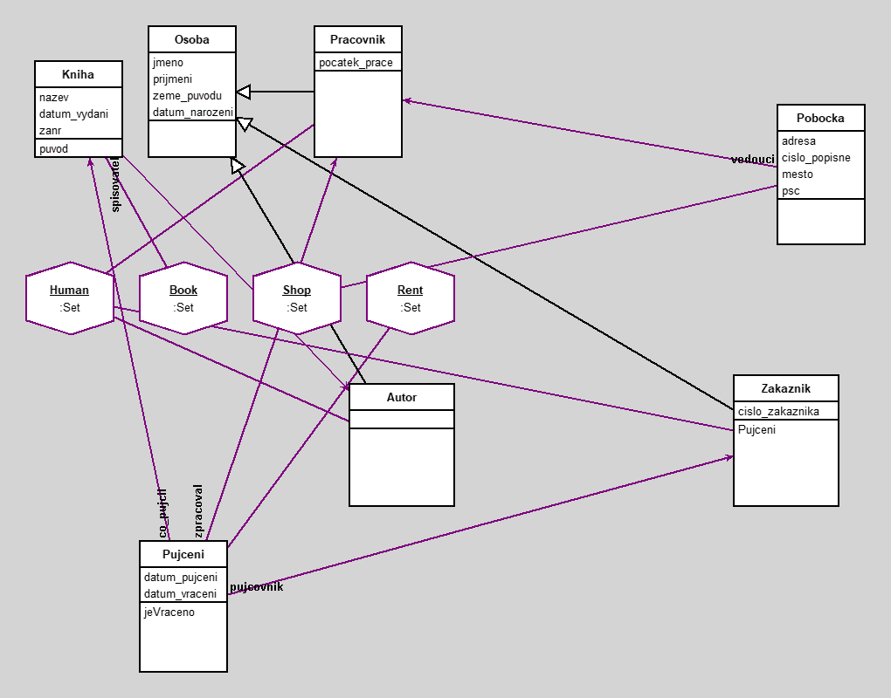

Knihovna
author(s): Carikov Leonid
Ukazka systemu knihovny
Workspace
Human select: [:a | a zeme_puvodu = 'Anglie']
Book select: [:a | a datum_vydani year > 1900 ]
pobocka := Shop detect: [:s | s adresa = 'Jana Masaryka'].
vedouci := pobocka vedouci.
Workspace Objects
-
Book :Set
-
Human :Set
-
Rent :Set
-
Shop :Set
-
pobocka :Pobocka
-
vedouci :Pracovnik
Script
| isNul |
Human := Set new.
Book := Set new.
Shop := Set new.
Rent := Set new.
o1 := Autor new.
o1 jmeno: 'Alexandr'.
o1 prijmeni: 'Puskin'.
o1 zeme_puvodu: 'Rusko'.
o1 datum_narozeni: '6 Jun 1799' asDate.
Human add: o1.
o2 := Autor new.
o2 jmeno: 'Karel'.
o2 prijmeni: 'Capek'.
o2 zeme_puvodu: 'Cesko'.
o2 datum_narozeni: '9 Jan 1890' asDate.
Human add: o2.
o3 := Autor new.
o3 jmeno: 'George'.
o3 prijmeni: 'Orwell'.
o3 zeme_puvodu: 'Anglie'.
o3 datum_narozeni: '25 Jun 1903' asDate.
Human add: o3.
o4 := Autor new.
o4 jmeno: 'Ernest'.
o4 prijmeni: 'Hamingway'.
o4 zeme_puvodu: 'Anglie'.
o4 datum_narozeni: '21 Jul 1899' asDate.
Human add: o4.
o5 := Zakaznik new.
o5 jmeno: 'Leonid'.
o5 prijmeni: 'Carikov'.
o5 zeme_puvodu: 'Rusko'.
o5 cislo_zakaznika: '12345'.
o5 datum_narozeni: '10 Dec 2003' asDate.
Human add: o5.
o6 := Zakaznik new.
o6 jmeno: 'Vladimir'.
o6 prijmeni: 'Scerbakov'.
o6 zeme_puvodu: 'Cesko'.
o6 cislo_zakaznika: '54321'.
o6 datum_narozeni: '9 Nov 2002' asDate.
Human add: o6.
o7 := Pracovnik new.
o7 jmeno: 'Petr'.
o7 prijmeni: 'Blaha'.
o7 zeme_puvodu: 'Cesko'.
o7 pocatek_prace: '14 Feb 2024' asDate.
o7 datum_narozeni: '26 Nov 1999' asDate.
Human add: o7.
o8 := Pracovnik new.
o8 jmeno: 'Jakub'.
o8 prijmeni: 'Fiala'.
o8 zeme_puvodu: 'Slovensko'.
o8 pocatek_prace: '1 Dec 2020' asDate.
o8 datum_narozeni: '7 May 1987' asDate.
Human add: o8.
b1 := Kniha new.
b1 nazev: 'Starec a More'.
b1 datum_vydani: '1 Sep 1952' asDate.
b1 zanr: 'Novela'.
b1 spisovatel: o4.
Book add: b1.
b2 := Kniha new.
b2 nazev: '1984'.
b2 datum_vydani: '8 Jun 1949' asDate.
b2 zanr: 'Roman'.
b2 spisovatel: o3.
Book add: b2.
b3 := Kniha new.
b3 nazev: 'Ruslan a Ludmila'.
b3 datum_vydani: '1 Jan 1820' asDate.
b3 zanr: 'Poema'.
b3 spisovatel: o1.
Book add: b3.
b4 := Kniha new.
b4 nazev: 'R.U.R.'.
b4 datum_vydani: '1 Jan 1920' asDate.
b4 zanr: 'Drama'.
b4 spisovatel: o2.
Book add: b4.
s1 := Pobocka new.
s1 adresa: 'Jana Masaryka'.
s1 cislo_popisne: '10'.
s1 mesto: 'Praha'.
s1 psc: '12000'.
s1 vedouci: o7.
Shop add: s1.
s2 := Pobocka new.
s2 adresa: 'Veslarska'.
s2 cislo_popisne: '199'.
s2 mesto: 'Brno'.
s2 psc: '63700'.
s2 vedouci: o8.
Shop add: s2.
r1 := Pujceni new.
r1 datum_pujceni: '14 Nov 2024' asDate.
r1 datum_vraceni: '20 Dec 2024' asDate.
r1 pujcovnik: o5.
r1 co_pujcil: b1.
r1 zpracoval: o7.
Rent add: r1.
r2 := Pujceni new.
r2 datum_pujceni: '1 Jun 2023' asDate.
r2 datum_vraceni: '15 Jul 2023' asDate.
r2 pujcovnik: o6.
r2 co_pujcil: b2.
r2 zpracoval: o8.
Rent add: r2.
r3 := Pujceni new.
r3 datum_pujceni: '1 Jun 2025' asDate.
r3 datum_vraceni: isNul.
r3 pujcovnik: o6.
r3 co_pujcil: b3.
r3 zpracoval: o8.
Rent add: r3.
Diagram

Classes
Pobocka
|
instance variables
adresa :String
cislo_popisne :String
mesto :String
psc :String
vedouci :Object
|
methods
adresa
adresa:
cislo_popisne
cislo_popisne:
initialize
mesto
mesto:
psc
psc:
vedouci
vedouci:
|
|
|
code of non-accessing methods:
Kniha
|
instance variables
datum_vydani :Date
nazev :String
spisovatel :Object
zanr :String
|
methods
datum_vydani
datum_vydani:
initialize
nazev
nazev:
puvod
spisovatel
spisovatel:
zanr
zanr:
|
|
|
code of non-accessing methods:
Osoba
|
instance variables
datum_narozeni :Date
jmeno :String
prijmeni :String
zeme_puvodu :String
|
methods
datum_narozeni
datum_narozeni:
initialize
jmeno
jmeno:
prijmeni
prijmeni:
zeme_puvodu
zeme_puvodu:
|
|
|
code of non-accessing methods:
Pujceni
|
instance variables
co_pujcil :Object
datum_pujceni :Date
datum_vraceni :Date
pujcovnik :Object
zpracoval :Object
|
methods
co_pujcil
co_pujcil:
datum_pujceni
datum_pujceni:
datum_vraceni
datum_vraceni:
initialize
jeVraceno
pujcovnik
pujcovnik:
zpracoval
zpracoval:
|
|
|
code of non-accessing methods:
Autor
|
instance variables
|
methods
|
|
|
code of non-accessing methods:
Zakaznik
|
instance variables
cislo_zakaznika :String
|
methods
cislo_zakaznika
cislo_zakaznika:
initialize
Pujceni
|
|
|
code of non-accessing methods:
Pracovnik
|
instance variables
pocatek_prace :Date
|
methods
initialize
pocatek_prace
pocatek_prace:
|
|
|
code of non-accessing methods:
Links
Data file and
class source.
Generated by Daskalos - Object Modeling Tutor (C) 2006 V. Merunka
14.02.2025г.